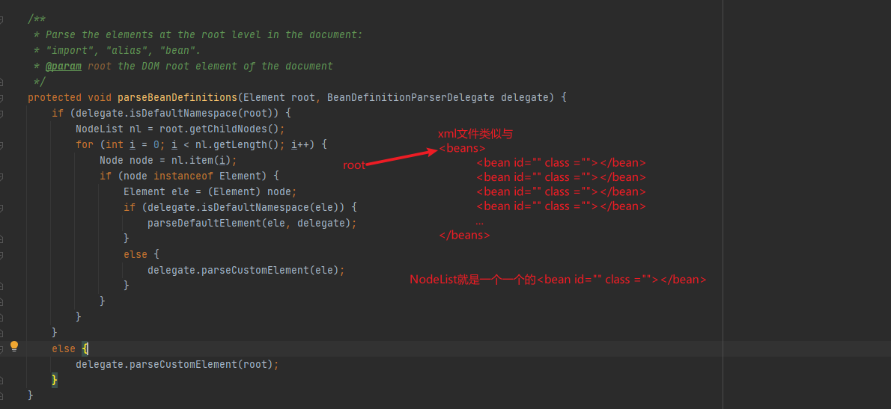

以XmlBeanFactory为例
配置文件的封装
首先哈，先将xml文件包装成Resource类，然后通过super(parentBeanFactory)来设置实现了某些接口的类不通过此处注入。
加载bean
将上一步的资源类包装成EncodeResource(EncodeResource的作用是以某种编码方式读取Resource的流数据)，在通过EncodeResource获取InputStream，将该资源的InputStream包装成InputSource类处理，接着将资源类以2种方式(DTD和XSD)之一的验证模式获取(应该叫new一个)Document对象
解析及注册beanDefinitions
根据doc来注册bean，这里使用了模板类设计模式
这里先解析的profile，profile的用法
1 | <beans xmlns="..."> |
集成到web环境时，在web.xml时中加入一下代码
1 | <context-param> |
这样可以在配置文件中配置2套配置，springboot的原理就是在这里了。

解析默认空间的bean
parseDefaultElement
1 | private void parseDefaultElement(Element ele, BeanDefinitionParserDelegate delegate) { |
processBeanDefinition
1 | protected void processBeanDefinition(Element ele, BeanDefinitionParserDelegate delegate) { |
parseBeanDefinitionElement
1 | // ele:<bean id="..." name="..." class="..."> containingBean:null |
parseBeanDefinitionElement
1 | public AbstractBeanDefinition parseBeanDefinitionElement( |
至此完成了对XML文档到GenericBeanDefinition的转换，也就说到这里，XML中所有的配置都可以在GenericBeanDefinition的实例类中找到对应的配置
GenericBeanDefinition只是子类实现，而大部分的通用属性都保存到了AbstractBeanDefinition中。
后续没有深入挖掘了…
decorateBeanDefinitionIfRequired
注册和通知相关的监听器没往下看。。。。。
registerBeanDefinition
1 | public static void registerBeanDefinition( |
registry.registerBeanDefinition
1 | public void registerBeanDefinition(String beanName, BeanDefinition beanDefinition) |
registry.registerAlias
1 |
|
通知监听器解析及注册完成
这里的实现只为扩展，当程序开发人员需要对注册BeanDefinition事件进行监听时可以通过注册监听器的方式并将处理逻辑写入监听器中，目前在spring中并没有对此事件做任何逻辑的处理
alias标签的解析
1 | <beans> |
1 | /** |
import标签的解析
1 | <beans> |
1 | protected void importBeanDefinitionResource(Element ele) { |
嵌入式标签的解析
递归调用beans的解析过程，仅此而已